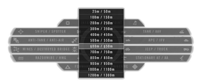
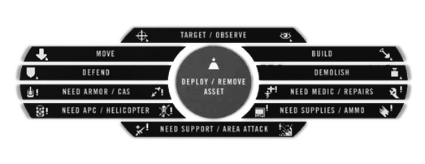
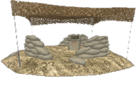
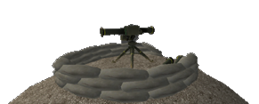
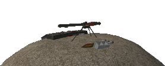
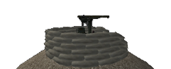
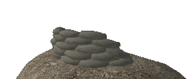

O Líder de Esquadrão
Guiando Esquadrão
Como explicado na seção Navegação no Campo de Batalha, o Líder do Esquadrão pode colocar marcas no mapa para os membros de seu esquadrão seguirem. Eles encontrarão uma marca em sua bússola para seguir, bem como um ícone no mapa. O Líder do Esquadrão deve usá-los sempre que possível e também pode usar isso para obter facilmente a distância em direção ao alvo. Ele pode fazer isso a partir do minimapa clicando com o botão direito do mouse e colocando a marca ou pressionando a tecla de rádio secundária (T ) e apontando para o alvo e usando um dos botões para colocar o marcador.
 Alvo
Alvo  Construir
Construir  Observar
Observar Defender
Defender  Demolir
Demolir  Mover
Mover
O comandante também pode comandar você. Se você aceitar o pedido (PAGE UP), sua marca será substituído pelo pedido do comandante.
Marcando Inimigos
O Lider de Esquadrão em PR:BF2 tem muitas habilidades funcionais. Ele é capaz de marcar unidades inimigas no mapa e encaminhar relatos de contato para o comandante da equipe com a habilidade de marcar um alvo no mapa da equipe. Para executar essas funções, siga estas etapas:
- Defina uma ordem de posição de destino com a roda de menu para adquirir uma distância aproximada do contato. (Abra o mapa para ver o intervalo a ser alistado listado sob o mapa ).
- Selecione o rádio do seu inventário e use o botão direito do mouse (RMB ) para ativá-lo.
- Agora segure a tecla de menu radio principal (Q) e selecione o botão SETAR DISTANCIA DO CONTATO, depois selecione a distância do alvo na lista.
- Reabra o menu principal de rádio e selecione o tipo de contato alvo para marcar no mapa. Cada jogador pode colocar até 3 marcadores que permanecem por 5 minutos.

O GTL Designador (GTLD)
O kit de Líder de Esquadrão e o kit Spotter usado pelas forças convencionais são equipados com GTLD (Ground Target Laser Designator). Este equipamento tem melhor zoom do que os binóculos comuns, inclui um visor de faixa e permite que você marque alvos inimigos que podem ser alvo de bombas ou mísseis da unidade aérea aliada (e inimiga).
Com o GTLD equipado, você pode clicar com o botão direito do mouse para aumentar o nível de zoom e clicar com o botão esquerdo para alternar o estado ativado / desativado. Enquanto em diante, o GTLD emite um laze, representado com um pequeno quadrado verde e a distância até ele, que você deve manter seu alvo até que a bomba / míssil o atinja, ao contrário das versões anteriores, onde o laze "grudaria" no alvo mesmo sem linha de visão.
Devido a limitações do motor, pode haver situações em que a representação do laze não apareça no topo do alvo. Isso não terá nenhum efeito no jogo, você pode manter o centro da visão no alvo até que o alvo seja atingido.
Além disso, ao observar com o GTLD, você pode acessar o menu de rádio principal (Q) para solicitar suporte aéreo aproximado (CAS) ou chamar apoio de Morteiros. Fazer isso transmitirá automaticamente uma mensagem de texto para sua equipe detalhando a solicitação e adicionando um marcador de destino ao mapa. (Você precisa especificar a distância para o alvo usando o mesmo método descrito para detectar inimigos. )
Rally Points
Um Líder de Esquadrão tem a capacidade de definir Rally Points (RP ). Isso permite que membros do esquadrão mortos se reagrupem em uma área segura com o resto de seu esquadrão. Para colocar um RP, você precisa pressionar a tecla de rádio secundária (T ) e selecionar COLOCAR RALLY POINT.
As seguintes condições devem ser atendidas para que o RP seja colocado com sucesso:
- Você é o líder do seu esquadrão e está equipado com o kit Officer.
- Você precisa ter 2 membros do esquadrão perto de você.
- Inimigo está a mais de 50m de distância em mapas de 1x1km ou mapas de 125m ou 2x2km e 4x4km.
O rally desaparece automaticamente após 60 segundos, a menos que:
- Está dentro de quadrantes da grade do mapa 2x de um FOB aliado
- Está dentro de quadradantes do mapa 2x de um amigável APC ou IFV. Apenas aqueles dos quais você pode solicitar kits.
Um inimigo que esteja a menos de 50m em mapas de 1x1km ou mapas de 125m ou 2x2km e 4x4km do ponto de encontro irá desativá-lo. Nos mapas maiores, são 600m.
Um ponto de rally rearma a cada 1 minuto. A menos que tenha sido destruido. Nesse caso, você precisa esperar 5 minutos.
Solicitando Suporte
O líder do esquadrão também pode usar seu rádio para solicitar apoio de outros esquadrões. Para isso, ele deve ativar o rádio e depois pressionar a tecla de rádio secundária (T). Isso abrirá o menu para solicitar suporte, usar recursos e contruir estruturas da equipe. Os cinco comandos inferiores começando com “Preciso ...” colocarão um marcador de mapa na sua posição. Eles também transmitem uma mensagem de rádio para sua equipe para alertá-los sobre sua solicitação. O pedido Preciso de Area Attack comporta-se um pouco diferente do resto. Em alguns mapas, forças convencionais podem usar este comando para solicitar uma salva de artilharia. Se o seu pedido for aprovado pelo comandante da equipe, o ataque ocorrerá após um minuto. Depois de carregar um novo mapa ou executar um area attack, leva 30 minutos até que ele esteja disponível novamente. Facções igualmente não convencionais têm acesso a uma salva de morteiros a cada 20 minutos na maioria dos mapas.

Solicitando suporte pelo de rádio
Trabalho de Construção
A construção de estruturas / assets é uma funcionalidade essencial do Líder de Esquadrão que o Comandante da equipe também possui. Ao implantar e construir um Forward Outpost (FOB), um Líder de Esquadrão precisa ter um kit officer e uma caixa de suprimento pesada dentro de um raio de 50m de sua posição. 2 caixas de suprimentos leves oferecem as mesmas capacidades que uma caixa de suprimento pesado para atingir o mesmo objetivo. Os Insurgents, Taliban e o Hamas só podem implantar hidouts, morteiros e armas antitanque para sua equipe, que não precisam de suprimentos para construir essas estruturas. Para executar esta função, é necessário um líder de squad ou kit de colaborador.
Construindo estruturas através do rádio

Para implantar uma estrutura, siga estas etapas:
- Selecione e ative o rádio / celular.
- Olhe na direção em que a estrutura deve ser posicionada. Será colocado 10m à sua frente.
- Depois de implantá-lo, pressione a tecla do menu de rádio secundário (T).
- Clique com o botão esquerdo do mouse em Construir / Remover ASSET.
- Selecione a estrutura que você deseja construir na lista.
uma pá é necessária para construir estruturas.

Os jogadores atualmente em pé onde o implementáveis está sendo colocado morrerão. Portanto, certifique-se de que seu esquadrão saiba onde você pretende construir. Os soldados precisam usar a pá para construir ativos. A construção está concluída quando a escavação é interrompida.
Coloque as estruturas em áreas não obstruídas de terreno aberto para evitar efeitos indesejáveis e locais de posicionamento indesejados. A construção só aparecerá se o local da veiculação não estiver muito acima ou abaixo da sua posição.
Para remover uma estrutura construída, os membros do esquadrão devem usar o botão direito para destruir uma colocação, então o Líder do Esquadrão pode clicar com o botão direito no menu Construir / Remover ASSET enquanto aponta para o objeto a não mais que 5m de distância, para removê-lo completamente.
As armas de estruturas podem ser rearmadas largando bolsas de munição ao lado deles. Várias bolsas são necessários para rearmar completamente uma posição.
Removendo e Construindo um exemplo de uma foxhole

Estruturas Implementáveis
Aqui está uma lista das estruturas Implementáveis e os requisitos para construí-las. As estruturas Implementáveis podem ser desmontadas com uma pá ou, alternativamente, destruídos com C4, IEDs, disparos de tanques, alguns disparos de APC ou qualquer outra forma de material pesado. as estruturas também podem ser completamente destruídas, continuando a danificar a base do local. FOBs e Hidouts podem ser destruídos também por morteiros ou explosivos C4 e TNT. Os líderes da esquadrão podem remover estruturas não compiladas com o rádio de forma semelhante à forma como foram implantados, usando alternativamente o clique direito para remover a base da estrutura. O modo de disparo alternativo para a Pá também tem a capacidade de desmontar estruturas não construidas. Uma observação importante sobre os requisitos e limitações listados abaixo é que todos os valores sobre a distância para um FOB e a quantidade máxima de assets por FOB são dobrados no modo de jogo CNC (exceto a quantidade de morteiros ). Lembre-se também que 2 grandes caixas de suprimentos também podem ser substituídas por 4 pequenas caixas de suprimentos ou 1 grande e 2 pequenas caixas. Para saber mais sobre logística e caixas veja o canal de logística..
Forward Operating Base (FOB): A base operacional avançada, também conhecida como forward outpost, serve como uma posição de spawn defensiva para a equipe. Ela fica online 90 segundos depois de ser construída. Ela se torna inviolável por 30 segundos se 1 inimigo estiver a 10 m, 2 inimigos em 50 m, 4 inimigos em 100 m ou 8 inimigos em 150 m. Requisitos e limitações:
- Deve ser construído dentro de 50m de uma caixa de suprimentos grande e do time.
- A equipe pode ter um total de 6 postos avançados ao mesmo tempo.
- Deve ser construído a pelo menos 200m de outros postos avançados e do QG da equipe.
- Deve ser construído a pelo menos 10m da borda do mapa (200m no CNC ).

Hideout: Insurgentes usam esconderijos (hidouts) como local de spawn. Se 2 ou mais inimigos estiverem próximos em uma área (dentro de 50m ), o spawn é desativado até 90 segundos depois que eles saem ou morrem. Requisitos e limitações:
- Solicitado mais de 200m do esconderijo mais próximo e do QG insurgente.
- A equipe pode ter até seis esconderijos ao mesmo tempo.
- Deve ser construído a pelo menos 10m de distância da borda do mapa.

Heavy MG: Uma metralhadora pesada. Requisitos e limitações:
- Deve ser colocado a menos de 200m de um FOB / hideout e a pelo menos 200m do CO-Post da equipe e a 50m do Vehicle Depot.
- 2 caixas de suprimentos grandes devem estar dentro de 200m.
- Apenas 2 MG por FOB e dentro do raio de 200m.
- A equipe pode ter até 24 MGs pesados.

Anti-Tank: Um lançador de mísseis anti-tanque implantável. Esta arma possui imagem térmica e 1 nível fixo de ampliação. Recarregar demora 20s. Requisitos e limitações:
- Deve ser colocado a menos de 200m de um FOB / hideout e a pelo menos 200m do CO-Post da equipe e a 50m do Vehicle Depot.
- 2 caixas de suprimentos grandes devem estar dentro de 200m.
- Nenhuma outra colocação anti-tanque pode estar a uma distância de 200m e nessa FOB.
- A equipe pode ter até 3 posições antitanque ao mesmo tempo.

Anti-Tank (Forças não convencionais): A SPG9 AT-launcher possui apenas um pequeno alcance de tiro. Pode disparar dois tipos de munição e leva 15s para recarregar. Requisitos e limitações:
- Deve ser colocado a menos de 200m de um FOB / hideout e a pelo menos 200m do CO-Post da equipe e a 50m do Vehicle Depot.
- 2 caixas de suprimentos grandes devem estar dentro de 200m (somente para as milícias e rebeldes sírios ).
- Nenhuma outra colocação anti-tanque pode estar a uma distância de 200m e nessa FOB.
- A equipe pode ter até 3 posições antitanque ao mesmo tempo.

Antiaéreo: Um lançador de mísseis antiaéreos implementavel. Requisitos e limitações:
- Deve ser colocado a menos de 200m de um FOB / hideout e a pelo menos 200m do CO-Post da equipe e a 50m do Vehicle Depot.
- 2 caixas de suprimentos grandes devem estar dentro de 200m.
- Nenhuma outra colocação anti-aérea pode estar a uma distância de 200m e nessa FOB.
- A equipe pode ter até 6 colocações anti-aéreas.
- Forças não convencionais recebem uma metralhadora DShK em um tripé como posicionamento anti-aéreo..

Foxhole: Uma trincheira fortificada oferece cobertura contra pequenas armas e ataques de artilharia. Requisitos e limitações:
- Deve ser colocado a menos de 200m de um FOB / hideout e a pelo menos 200m do CO-Post da equipe e a 50m do Vehicle Depot.
- 2 caixas de suprimentos grandes devem estar dentro de 200m.
- Um máximo de 9 outras foxholes, sacos de areia ou segmentos de arame farpado estão dentro de 200m e nessa FOB.
- A equipe pode ter até 60 trincheiras, paredes de sacos de areia, segmentos de arame farpado no total.
Sandbag-wall: Uma parede de sacos de areia é uma pequena parede de 5 metros feita de sacos de areia para se esconder atrás e usar como cobertura contra armas pequenas. Requisitos e limitações:
- Deve ser colocado a menos de 200m de um FOB / hideout e a pelo menos 200m do CO-Post da equipe e a 50m do Vehicle Depot.
- 2 caixas de suprimentos grandes devem estar dentro de 200m.
- Um máximo de 9 outras foxholes, sacos de areia ou segmentos de arame farpado estão dentro de 200m e nessa FOB.
- A equipe pode ter até 60 trincheiras, paredes de sacos de areia, segmentos de arame farpado no total.

Razor wire: Um bloco de 10m de largura de arame farpado e armadilhas para tanques. Requisitos e limitações:
- Deve ser colocado a menos de 200m de um FOB / hideout e a pelo menos 200m do CO-Post da equipe e a 50m do Vehicle Depot.
- 2 caixas de suprimentos grandes devem estar dentro de 200m.
- Um máximo de 9 outras foxholes, sacos de areia ou segmentos de arame farpado estão dentro de 200m e nessa FOB.
- A equipe pode ter até 60 trincheiras, paredes de sacos de areia, segmentos de arame farpado no total.
Roadblock (Forças não convencionais): A 5m ou 10m (clique com o direito ou esquerdo) bloco de estrada largo do lixo. Requisitos e limitações:
- Deve ser colocado a 200m do CO-Post da equipe e a 50m do Vehicle Depot.
- Um máximo de 9 outros obstáculos, navalhas, trincheiras e sacos de areia podem ser dentro de 200m.
- A equipe pode ter até 100 bloqueios no total.

Mortar: Uma posição de morteiros fixa que pode fornecer suporte indireto a longas distâncias. Todas as facções podem disparar munições altamente explosivas. As forças convencionais e a milícia também podem usar munições de flagmentação e fumaça. Morteiros não podem ser construídos em mapas menores que 2km. Requisitos e limitações:
- Deve ser colocado a menos de 200m de um FOB / hideout e a pelo menos 200m do CO-Post da equipe e a 50m do Vehicle Depot.
- 2 grandes caixas de suprimentos devem estar dentro de 200m (somente necessário para forças convencionais, milícia e rebeldes sírios ).
- A equipe pode ter até 2 posições de morteiro ao mesmo tempo.
- Ambas as posições de morteiros devem ser colocadas dentro de 50m uma da outra.